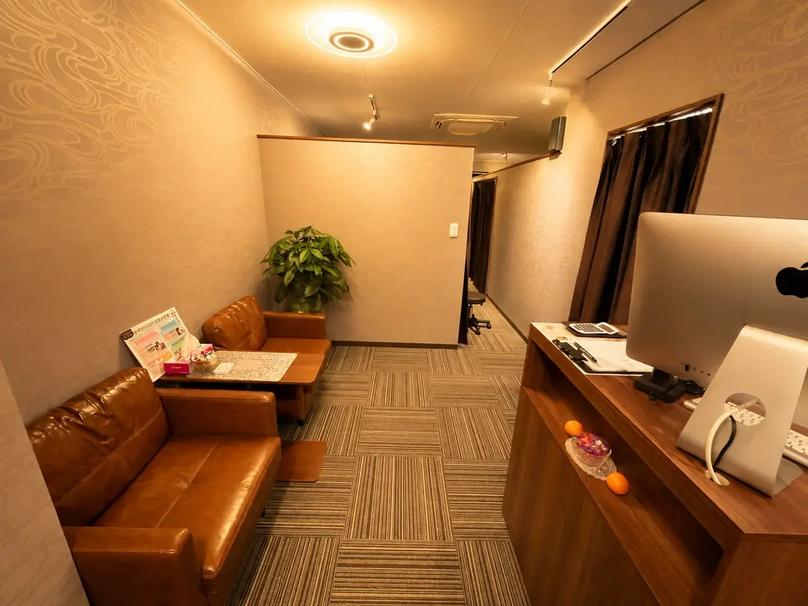
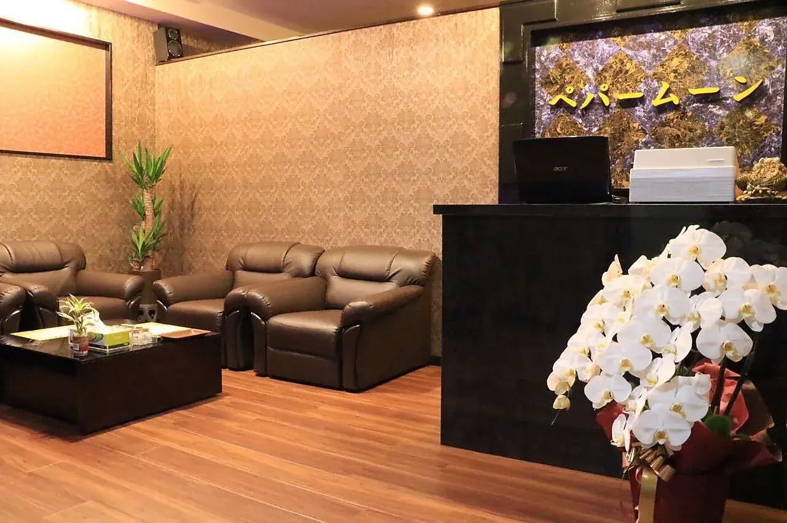
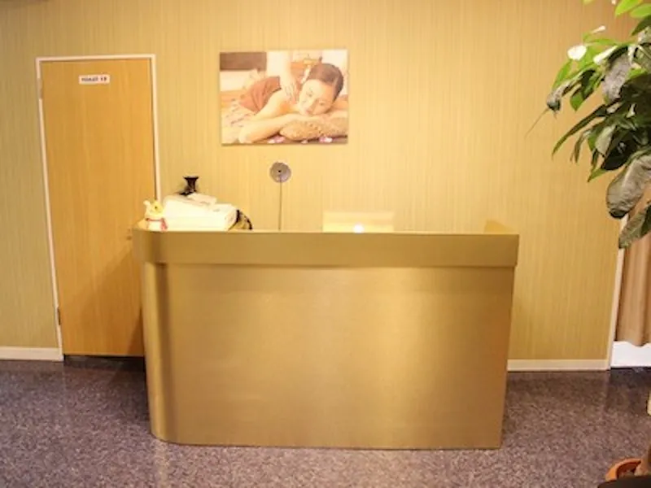

新横浜駅 徒歩1分
新横浜駅 徒歩1分
てもみサロン ペパームーン
新横浜店 本店
- 営業
- 平日 11:00～翌2:00
土日祝 10:00～翌2:00
最終受付 0:30 - 住所
- 横浜市港北区新横浜2-14-24 sk2ビル 7階-A
- 電話
- 045-624-9825
About us
心と身体のリズムを、自然な調和へ。
人の心と身体は、自然の一部です。そのリズムが乱れたときこそ、本来の調和を取り戻すことが大切だと私たちは考えています。
ペパームーンは経絡を重視し、リラクゼーションとエステのメニューを通じて、乱れたリズムを整えるお手伝いをしています。
新横浜駅をはじめ、どの店舗も駅から近く通いやすい立地と、リーズナブルな価格が自慢です。本格的な台湾式マッサージを、心ゆくまでご堪能ください。
経絡とツボを重視した台湾式の手技で、コリの芯までしっかりほぐします。
新横浜駅は徒歩1分、センター南駅は徒歩30秒。お仕事帰りにも気軽に。
新横浜店・川崎西口店は年中無休で翌2時まで営業しています。
お着替えは無料でご用意。施術後はドリンクサービスでひと息。
新横浜駅 徒歩1分

センター南駅 徒歩30秒
川崎駅 徒歩2分 川崎駅 徒歩2分
川崎駅 徒歩2分

蒲田駅 徒歩4分横にスワイプ